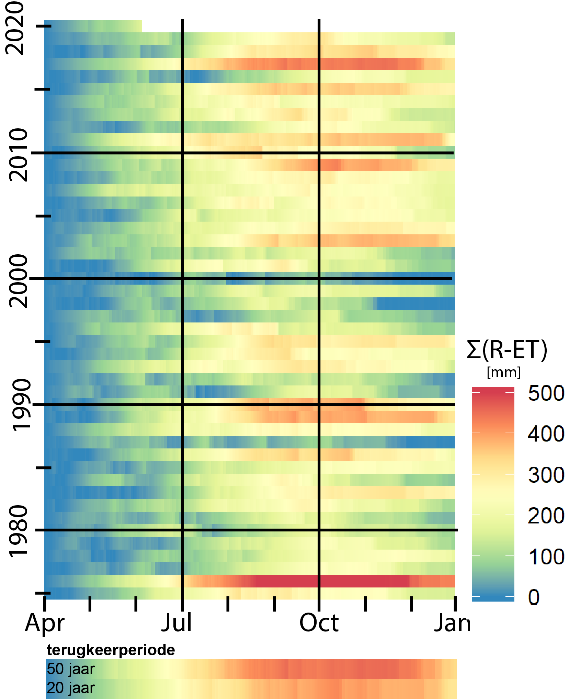

Het regent vaak in België en toch staan we hoog (23!) op de wereldranglijst van regio’s met waterstress (WRI, 2018) op een totaal van 164 landen, in de categorie 'hoog risico op waterstress', maw hoog risico op situaties waarbij niet alle watergebruikers nog voldoende water kunnen krijgen om aan hun vraag te voldoen. Vooral Vlaanderen is bijzonder kwetsbaar voor droogte door de grote bevolkingsdichtheid en veel landbouw en industrie. Het diepe grondwater in Vlaanderen is al sterk gebruikt in het verleden en vult maar heel traag opnieuw aan. Hieruit blijven oppompen is dus geen goed idee. Er zijn in Vlaanderen ook weinig grote rivieren die veel water aanvoeren. Als dan ook de oppervlakkige grondwaterlagen door opeenvolgende droge zomers niet voldoende aangevuld geraken, komt er druk te staan op onze hoge watervraag.
Die water waterstress is bovendien niet overal in Vlaanderen gelijk. De vraag hangt af van de aanwezige sectoren en activiteiten, terwijl het aanbod afhangt van de hydrologie van een regio en het micro-klimaat. Zoals je kan zien in onderstaande kaart die de evolutie van het hydrologisch neerslagtekort in Vlaanderen in 2019 weergeeft, zijn er regionale verschillen.

Er is nu wetenschappelijke consensus over het feit dat het er in Vlaanderen in de toekomst voor meer weersextremen gaan voorkomen. Er zal dus niet persé minder water uit de lucht vallen, maar dat water zal wél minder mooi verdeeld worden over het jaar. We krijgen dus zowel te maken met nattere als met drogere periodes. We kunnen dus verwachten dat er in de toekomst nog meer druk komt te staan op ons watersysteem, omdat de watervraag tijdens droge periodes nog zal toenemen. De onderstaande figuur toont het hydrologisch neerslagtekort (= neerslag - evapotranspiratie) van de voorbije 45 jaar. Elk jaar wordt de teller op 0 gezet op 1 april, de start van het hydrologisch seizoen. De balkjes onderaan geven de statistische terugkeerperiodes aan. Zo kan je zien hoe ‘uitzonderlijk’ een jaar is tov de andere jaren. De vorige 4 jaar waren dus erg droog, maar droge jaren kwamen ook al eerder voor.
Landbouw is in Vlaanderen dus zeker niet de grootste verbruiker, maar is wel een belangrijke grondwaterverbruiker. Landbouw en natuur zijn dus ook extra kwetsbaar bij droogte, zeker in de toekomst in het licht van klimaatverandering. Landbouwers rekenden tot nu toe sterk op regenwater aangevuld met oppervlakkig grondwater. Wanneer ze niet voldoende meer kunnen irrigeren door watertekort, komt in vele gevallen een groot deel van hun inkomen op de helling te staan.